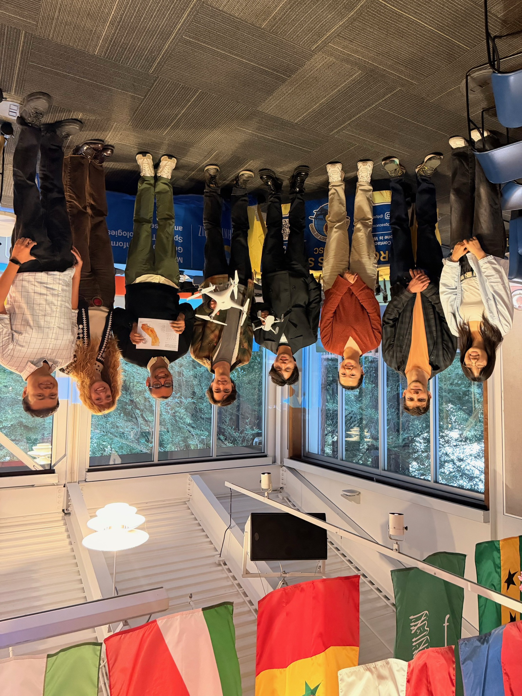
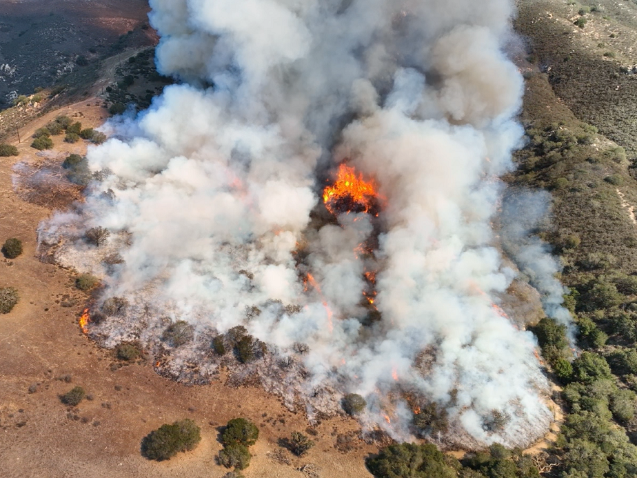
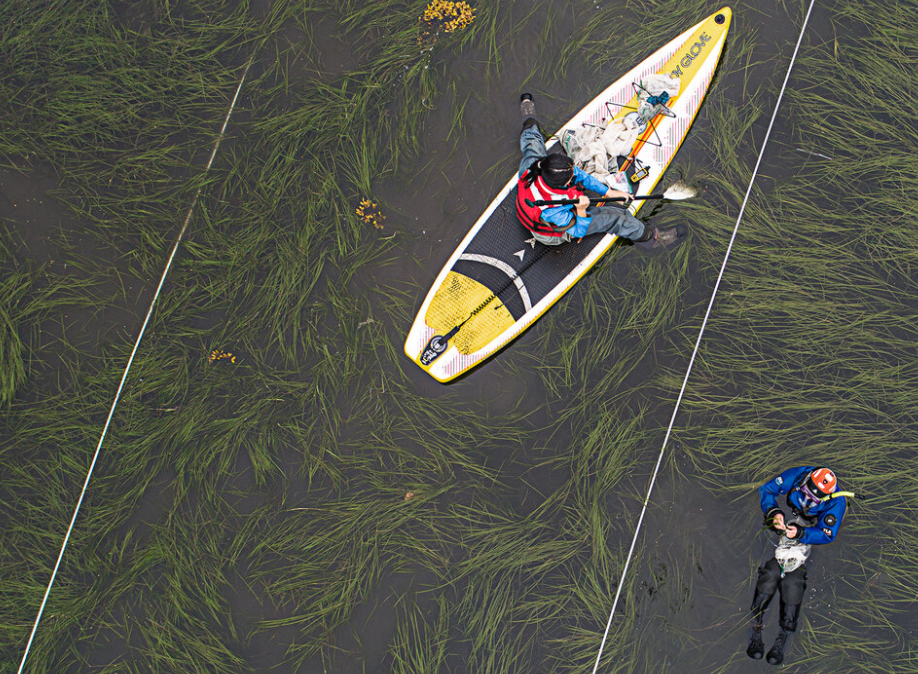
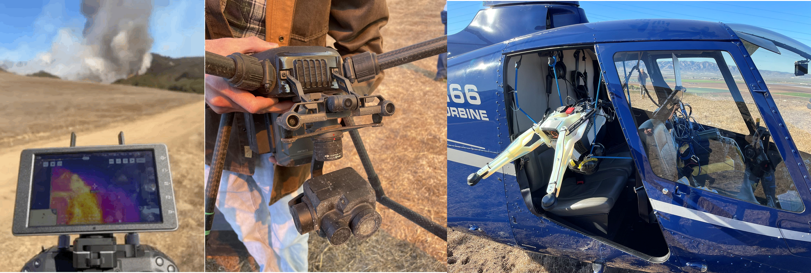
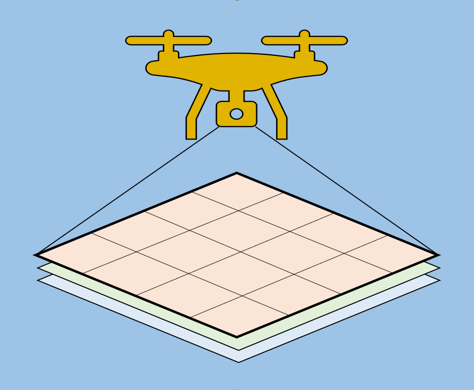

GeoFly Lab conducts peer‑reviewed research in GIS, remote sensing, and UAV-based mapping, supported by NSF/NASA/CalFire funding. We curate a large high‑resolution aerial imagery archive and develop reproducible geospatial workflows for analysis, modeling, and education. Our computing environment includes NVIDIA GPU resources to support scalable processing and machine‑learning experiments.

01-15 2026
GeoFly Lab welcomes a new eBee X drone for our NSF seagrass mapping project
11-21 2025
UCSC GIS Day 2025: Jointly hosted by GISTAR, CISR, GeoFly Lab, and the GIS & Drone Society

10-17 2025
Drone & GIS Society Featured at Baskin Day
02-20 2024
NSF Build and Broaden 2024 Summer Coastal Drone Fieldwork Application
02-01 2024
Geofly Lab has two funded Master's Research Assistant (RA) positions available.
Support and collaboration across academia, government, and community organizations.


